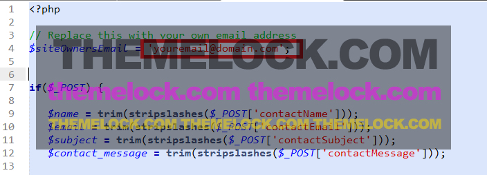

MaterialX - Material Design Resume Template Documentation
Thank you for purchasing this template. If you have any questions that are beyond the scope of this help file, please feel free to email via my user page contact form here. Thanks so much!.
Version : 1.1 | Last Update : April 5, 2015
Template Structure
Here's a rough overview of the template file structure.
|-- /assets
|--css [Style Sheets]
|-- bootstrap.min.css [Twitter Bootstrap CSS]
|-- animate.min.css [CSS for animations]
|-- main.css [Main CSS for theme]
|-- responsive.css [Media Queries for all devices]
|-- components.css [Extra Components for template]
|-- blog_sidebar.css [Style for Blog Sidebar]
|-- colors [Contains the color scheme stylesheets]
|--font [All webfonts that used on template]
|--images [images that used inside theme]
|--js [JavaScript Files]
|--libs [External CSS & JS Libraries]
|-- jwplayer [HTML5 Player for Blog video post]
|-- materialize [Material Design Library]
|-- owl-carousel [Carousel Slider]
|-- images [contains the images that used on template]
|-- videos [contains the videos that used on template]
|-- blog.html [Default Blog Style 1]
|-- blog-with-sidebar.html [Blog Style with Sidebar]
|-- single.html [Single Page/Post]
|-- index.html
If you need to edit your template. See the description above of each file and find your one to edit.
HTML Structure
This template is based on Twitter Bootstrap. Each section is nested within a section tag with an unique ID that used for on-page navigation.
For your convenience every sections and divs are well commented so that you can understand easily.
CSS Files and Structure
There are few CSS files in this template. The first three is main structure CSS, stylesheet and Responsive CSS files. See the Template Structure too see how they used.
If you would like to edit a specific section of the site, simply find the appropriate label in the CSS file, and then scroll down until you find the appropriate style that needs to be edited.
All CSS sections are also well commented :
JavaScripts
JavaScript Files are placed at the bottom of the page just before closing the body.
This theme imports three Javascript files.
- jQuery
- My custom scripts
- Some plugin
main.js is the main javascript files for the template where custom JS codes are written and other libraries are triggered through this script.
This JS file is also well commented and easily readable. You can change the code and customize as per your requirements easily.
Customizing Template
This template is easily customizable. HTML, CSS and JS file structure is placed earlier that are well commented.
If you want to customize any section, you will find the unique identifier (ID) on HTML and CSS files like below :
HTML
CSS
Just find the CSS id and class on your desired HTML Elements and change it from the CSS file.
If you face any problem, send your mail for support drom our user page.
Using Color Schemes
This template comes with 8 different color schemes. Choosing colo is pretty easy and straight-forward. Just open your index.html file and drom the stylesheed include section keep your preferred color stylesheet and remove/comment other files.

Using Different Navigation Menu styles
This theme comes with 3 different style navigation.
- Intelligent Menu // Hide intelligently on scroll
- Fixed Header Menu // Always fixed
- Mobile Intelligent Menu // Fixed normally, Hide on Mobile Devices
To use your preferred menu, open js/main.js file and find /* Choose your navigation style */ section and activate your preferred menu by uncommenting. Don't forget to comment/remove other two.

Rest of the customization is pretty easy. HTML and CSS files are well documented for your convenience.
If you still face any problem, let's contact through our profile to get support.
Using Send email form
This template includes a working send to email form for contact section. You can use your own email to get message directly from the contact form.
To use the form go to inc/sendEmail.php file and replace the email with your own email.
Using Google Map and your own address
To use the form go to js/main.js file and replace the latitude and longitude with your own location.
You can also set your own address to show on pop-up.
The other customization is very easy. You will find every code well commented. Just change as you want. If you face any problem, feel free to contact us through our profile page.